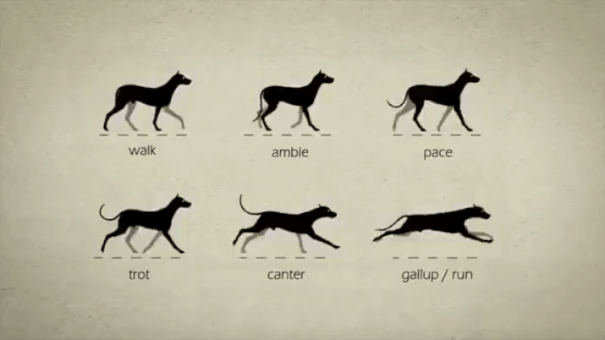

Chapter 7
I've had a rather stressful week due to a family emergency, and one of the things that's been most helpful is the one day at a time and it's a marathon, not a sprint genre of aphorisms. At first sight, the thought seems tautological and empty. After all you can't literally live more than one day at a time. Or can you? Yes you can. The trick is to think in terms of gaits rather than time periods.

Stephen Cunnane made this great video explaining various gaits in animals, and the gif above is a clip from that.
I want to talk about the gait appropriate for a life posture of mediocrity. This gait, I argue, is the amble.
Often, when we use words relating to time, we are really gesturing at behavioral tempo, and this creates an interesting kind of wiggle room in shaping our experience of time. A concept that's helpful for connecting the two is gait, the pattern of stepping "beats" that determines how you move, each foot executing a distinct behavior coupled to the other one (or three or five).
Gaits are semi-automatic, semi-controllable emergent internal clocks that intrude on conscious awareness, and are therefore available as an abstraction layer both for modulating observable behaviors and for shaping our subjective experience of time itself. Other variables, like speed (fast or slow?), strategy (tortoise or hare?) and attitude/posture (slouching or gradatim ferociter?) live within the framework created by a gait. Available gaits constitute a behavioral gearbox for an agent.
Horses have four traditional gaits: walk, trot, canter and gallop. But some breeds, known as gaited horses, carry a genetic mutation that appeared about a thousand years ago, and can sustain a fifth gait known as the amble:
Ambling gaits are smoother for a rider than either the two-beat trot or pace and most can be sustained for relatively long periods, making them particularly desirable for trail riding and other tasks where a rider must spend long periods in the saddle. Historically, horses able to amble were highly desired for riding long distances on poor roads. Once roads improved and carriage travel became popular, their use declined in Europe but continued in popularity in the Americas, particularly in areas where plantation agriculture was practiced and the inspection of fields and crops necessitated long daily rides.
The emergence of ambling, you might say, was the mediocrity revolution for horsekind. It was something of a big deal in the history of horses, and I suspect the emergence of a new gait is a big deal in general. A gait is the qualitative unit of behavior design that precedes any considerations of smooth/quantitative optimization or mediocritization. In horses, the gait determines the range of speeds achievable, the energy efficiency for the horse, and the smoothness of the ride for the rider. The emergence of ambling was apparently an important development for humans too, not just horses. It turned horse-riding into a higher-endurance, longer-range, more mediocre mode of transportation.
Gaits are nature's sophisticated generalization of the idea of "step size" in numerical optimization, where you have to have a strategy for discretizing the solution process of a naturally continuous problem (think of it as the gait of a one-legged hopping animal, hopping around in a conceptual space).
For you programmers out there, the gait-design problem is something like a compilation problem: how do you make a real agent (like an x86s processor or the body of a horse) execute solutions to problems imagined for some platonic abstraction like a moving point (like a universal Turing machine or a zero-footed point-animal).
Generalizing for all behaviors, gaits are how you reconcile the physiological realities of the embodied form of a decision-making agent (in the case of humans, physical, biochemical, hormonal, and so on) and the problem it is trying to solve. For a while in the late 90s, there was a strand of control theory research devoted to understanding the natural dynamics of systems and designing control strategies around the modeled "gaits" of systems in a general sense. Great advances were made in walking/running robotics as a result (some of which you can see being applied in Boston Dynamics robots).
To return to the opening question, can you live more than one day at a time? Yes you can, and you already do. The part of your brain stem that controls breathing is not thinking more than a few minutes ahead. The sleep centers of your brain are living in a window of a few days. Your muscle-maintainence circuits are reacting to entire weeks at a time. Our overall sense of subjective time is a function of the overall tempo of our many-stranded lives, the pattern of "beats" that emerge out of the interactions of various constituent rhythms.
Gaits are how we hack the experience of time to be meaningfully and controllably multi-threaded, and useful for designing both inner experience and outer behavior.
The "un-gaited" experience of time is philosophically muddy. Is time a single-threaded "dimension" like space, or a quantum-entangled mishmash of an infinite number of strands? We don't know. And to some extent it doesn't matter, because we live much of our lives within the gaited (hehe!) levels.
Are you living one day at a time, or two? That's an easier question than "what is time?". It depends on the gait you've adopted.
And your everyday "I", the executive-function agent whose stream of consciousness creates your normal experience of time outside of behaviors like meditation, experiences life through the lens of an overall life "gait". Perhaps you are walking through life, perhaps you are galloping through life. Perhaps you are in an all-out anaerobic sprint. Perhaps you are maintaining a steady aerobic pace for a marathon.
But if you want to last, endure the crises life throws at you, and go the distance you are capable of, you should probably learn to amble along. It is the right gait for slouching and slacking through life. Especially the crisis bits.